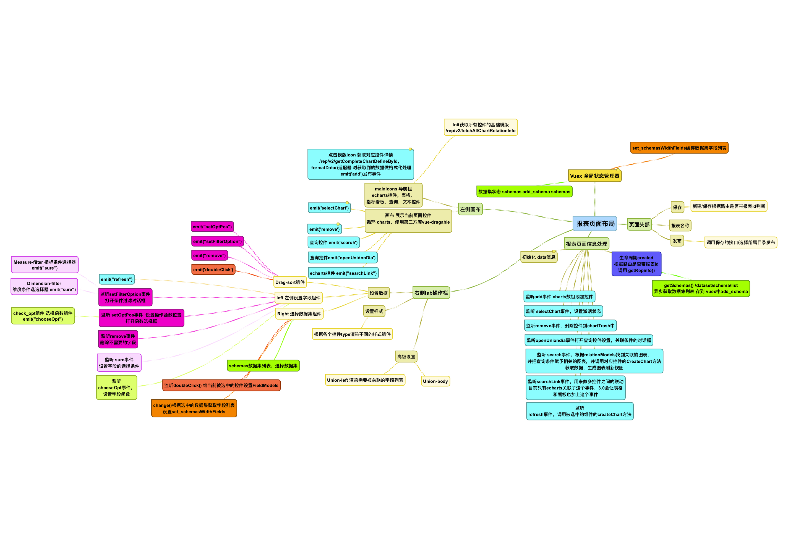

主体部分
主体部分总揽全局，工具栏，导航栏，右侧栏作为子组件，使用的数据全是由主体部分传过来的，所有的事件处理也集中由主体部分来处理
布局
上下布局 top: 导航栏 bottom: 画布： top:工具栏 bottom:控件展示区 右侧栏： 数据/样式/高级
控件展示区
使用 vue-grid-layout插件 控件可拖拽，缩放
data() { return { dialogVisible: false, // 是否发布操作时目录选择显示对话框 selectedIndex: null, // 被选中的图表下标 fordTree: [],// 发布的目录树 unionDialogInfo: { show: false, unionInfo: {}, type: 5, // 5查询，6图表关联 }, charts: [], // 定义echarts控件列表 containerCharts: [], // 容器控件 给查询控件使用 loading: undefined, // 报表的form表单信息 form: { name: '新建仪表盘', id: this.$route.query.id || 0, beDel: false, json: '', owner: this.$store.state.userInfo.username, parentId: 0, status: 0, type: 0, }, };